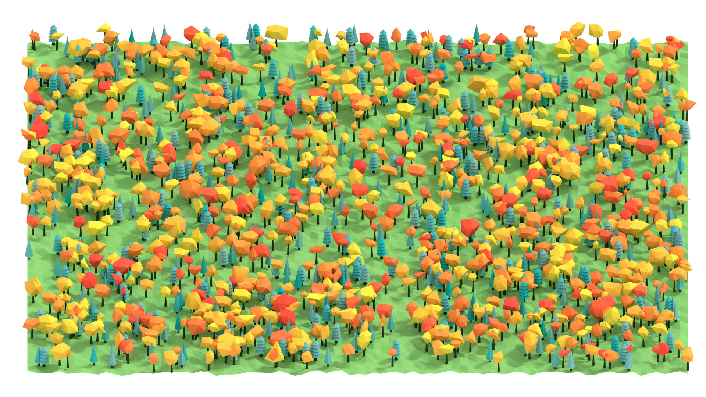
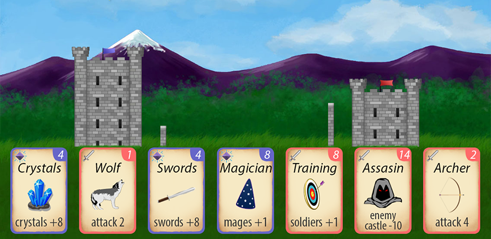
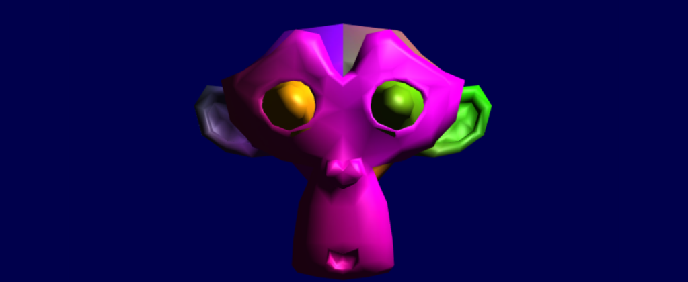

Hello
I am a freelance game developer located in Slovakia, most passionate about realtime 3D graphics rendering and innovative game development technology. I have grown to be an open source fan and believe in sharing with others. I am a huge advocate of Haxe and Kha, which I use to push my work forward.
Feel free to drop me an e-mail(lubos.lenco at me dot com), catch me on Twitter or add me on Skype(lubos.lenco). I am open to any sort of collaboration and love to hear what are you up to!
Lue

Lue is a minimal 3D rendering engine. It is the result of my desire to push 3D game making forward, although still very much in progress. This is easily my most ambitious project yet.
LowPoly Factory
Procedural lowpoly landscape generator for Blender.
Castle Siege
A card-based fantasy game. Read more.
Spiral Ride
Kha 3D
A set of examples showing how to use 3D graphics api provided by Kha.